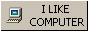

The Internet How it Was!
Welcome to AlephNull95!
page 1 | page 2 | page 3 | page 4 | page 5 | page 6 | page 7 | page 8 | About Windows95.com | About the Author
©ℵ0
Microsoft, MS, Windows, and the Windows logo are either registered trademarks or trademarks of Microsoft Corporation. Microsoft Corporation in no way endorses or is affiliated with this site or layout. All other trademarks are the sole property of their respective owners.
Music composed by The Keyboard Wizard, © 1994-1996 by Michael Walthius. '96 archive last fm listen to nitefunk!
